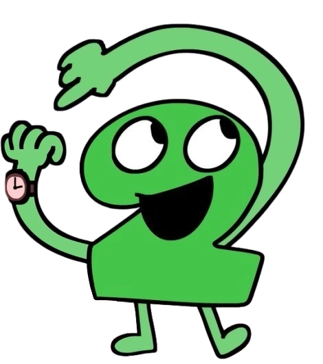

this website is still unfinished!
a collection of resources and archived media of the osc

have you ever wanted to find something in the osc but not want to dig across the whole internet to find it? well.. this may (or may not) solve your problems!